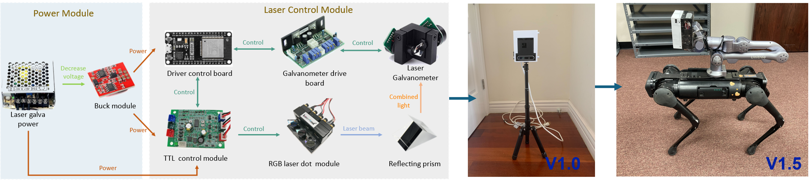
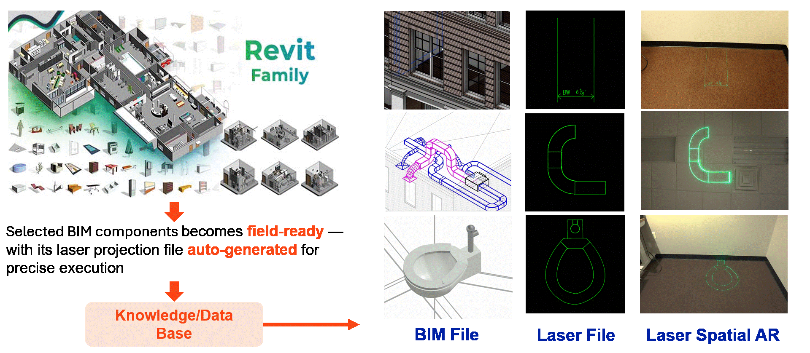

01 / THE PROBLEM & RATIONALE
Building Information Model (BIM) Designs Still Require Tedious Manual On-Site Layout
OUR RATIONALE
Use laser-based spatial AR to enable:
Direct Design Translation
Project BIM geometry onto physical surfaces.
Precise and Shared Layout
Provide accurate, full-scale spatial references.


02 / HARDWARE PROTOTYPE
A Low-Cost, Open-Source Laser Projection System
We developed a compact laser projector using galvanometer mirrors for precision pattern projection and an integrated camera for workface registration.

View full-size figure03 / SOFTWARE
From BIM to Laser Layouts
We extract task-specific geometry from BIM, convert it into laser patterns, and project the layouts onto physical surfaces.

View full-size animation04 / PERFORMANCE
Performance Evaluation
Laser Projection Accuracy
We evaluated projection accuracy at distances of 1–3 m under controlled conditions.
- Mean center-position error
- 0.54–1.74 mm
- Edge-length deviation
- ≤1.4%
BIM-Based Application Tests
- Window layout
- 6.0 mm
- HVAC layout
- 2.8 mm
- Countertop layout
- 8.5 mm